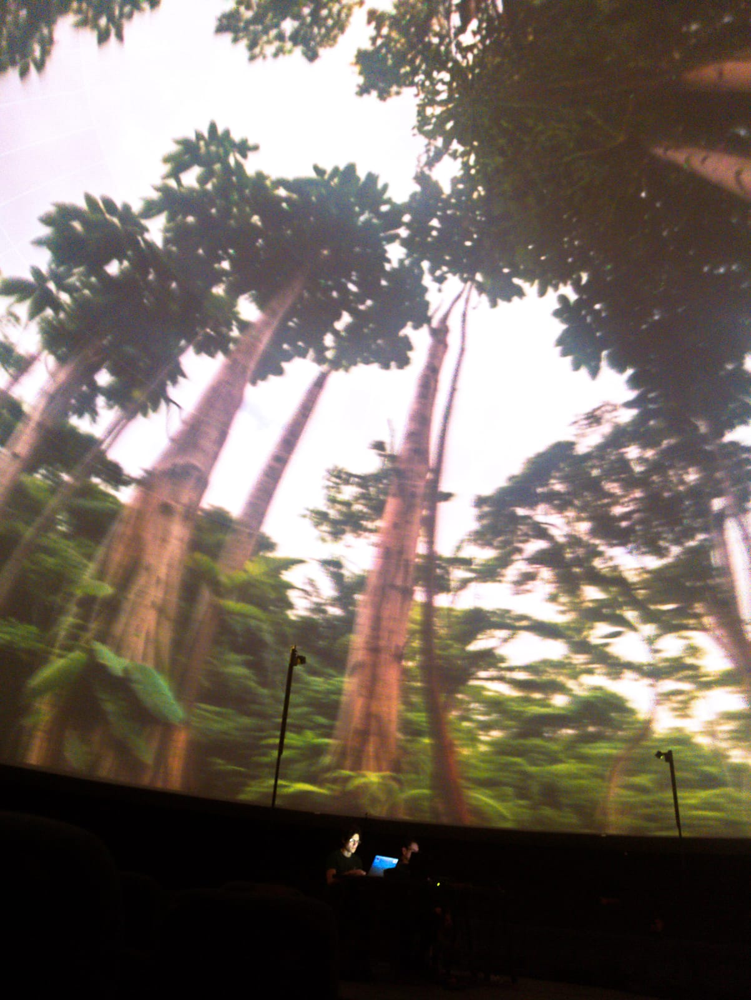
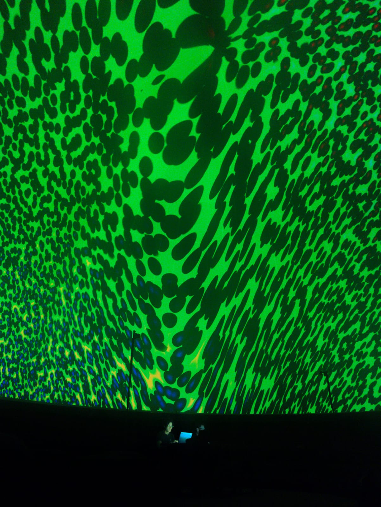

Las palabras en cursiva y color azul describen el propósito o el proceso principal detrás de cada uno de las experiencias y productos presentados aquí.
En el marco del 12° Festival Gabo, realizado en 2024, tuve la oportunidad de hacer la relatoría del taller dictado por Olivier Mauco en torno a los vinculos entre los videojuegos y el periodismo. La participación al taller y la posterior redacción de la relatoría, que se consultar ver aquí, me permitió profundizar en los vínculos entre estos dos mundos. No solo significó un ejercicio de una apropiación temática y posterior organización, sino que, lo asumi también como un proceos de elaboración conceptual de un conjunto de principios que sirvieran de marco para abordar de manera práctica la conceptualización e implementación de videojuegos con propósitos comunicativos, para lo cual tener un conocimiento previo y una forma de entender el medio fue clave, para leer entre líneas las ideas poderosas que se hallaban en lo que Olivier Mauco decía. La estructura de la relatoría se planteó de la siguiente forma:
Junto a mi colega Nelson Vera, quien hace varios años fundó 4L3PH, ganador de la Beca de creación de videoarte para domo, participamos como colectivo con una pieza performática audiovisual basada en live coding, que plantea una relectura especulativa de La Vorágine desde perspectivas contemporáneas. Aquí se puede ver la nota que hizo el equipo de comunicaciones sobre nuestra participación en el Festival Domo Lleno.
 También, junto a mi colega Nelson Vera, realizamos un Workshop en el marco de la Conferencia Internacional en Narrativas Digitales Interactivas. Este, titulado titulado "The Posthumanist Turn to Rethink Interactive Digital Narratives", se pensó como un espacio de discusión y aproximación a las maneras en que los distintos posthumanismos (crítico, decolonial, especulativo, tecnológico y materialista) pueden ampliar los tipos de relatos y las formas narrativas en el campo de las NDIs (Narrativas Digitales Interactivas). El diseño y realización de este workshop, fue una apuesta doble. Por un lado, fue una oportunidad para elaborar una propuesta conceptual que esperamos que pueda traducirse a un artículo académico pronto, y por otro, tenía como propósito conocer y ser parte de un evento tan importante como lo es esta conferencia, que nos permitió establecer vínculos con otros académicos del campo. Fue a raíz de esta experiencia, que este año, en el curso de Narrativas Digitales, fui invitado a ser parte del workshop sobre decolonización de narrativas, junto a Harmut Koenitz y María Cecilia Reyes. También fue a raíz de este vínculo, que, tanto Nelson como yo, seremos Co-Chairs de la Art Exhibition en la conferencia 2025, que se celebrará en Malta a comienzos de Diciembre. Como co-chairs, junto a otra colega, Terhi Marttila, que también será co-chair, que hemos definido la línea curatorial de la exhibición, para la cual hemos propuesto el tema "Kaleidoscopic Machines in a era of accelerated entanglements", que busca situar la creación de NDI en los debates contemporáneos vinculados con el desplazamiento de lo humano con vector privilegiado y en la intensificación de las relaciones con la tecnología en procesos de creación.